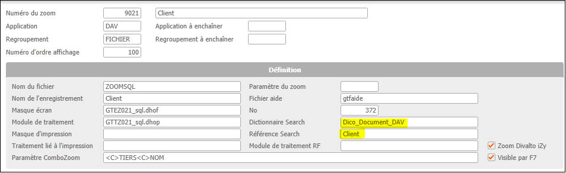
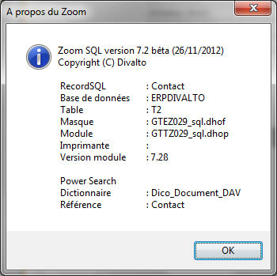

Une application qui crée, modifie ou supprime un document dans la base de données peut en informer le serveur Search. Celui-ci inscrit la demande d’indexation dans une file d’attente et réalise l’opération à « temps perdu » (généralement dans les secondes qui suivent la demande). Cela présente l’avantage de ne pas perturber ou ralentir l’application en charge du document tout en bénéficiant de l’accès au document quasi immédiatement après sa création ou sa modification.
Le zoom prend en charge automatiquement cette gestion. Il suffit pour cela d’indiquer dans les paramètres du zoom la référence du document Search dont il a la charge (par exemple, le zoom Clients gère le document Search Client). Le paramétrage est accessible depuis le menu Divalto par shift F7.
Attention : Certains Zooms sont présents plusieurs fois dans cette table en fonction du scénario d’appel.

Le menu « à propos » du Zoom permet de vérifier que ce paramétrage est actif.
